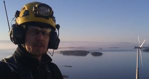

Turvallisesti korkealle!
Organisaatioiden turvallisen ja tehokkaan toiminnan perustana on hyvin toteutetut vaarojen kartoitus, riskinarviointi, työmenetelmäohjeistus ja pelastussuunnitelma prosessit.
Hard Access Technique Oy on erikoistunut tuottamaan organisaatioiden työturvallisuusdokumentit sekä putoamissuojaukseen-, köysityöskentelyyn- ja henkilöevakuointiin liittyvät ohjeet, koulutukset sekä kalustojärjestelmät.
Hard Access Technique Oy suorittaa myös kiinteiden putoamissuojausjärjestelmien asennuksia, ongelmapuiden kaatoa sekä vaikeasti saavutettavissa kohteissa teollisuuden ja kiinteistöhuollon töitä.
Henkilö yrityksen toiminnan takana on Pasi Nissilä. Nissilä on koulutukseltaa Irata level 3. köysiteknikko. Aikaisemmin hän on toiminut palo- ja pelastustoimen palveluksessa palomies-sairaankuljettajan, pelastussukeltajan, paloesimiehen sekä opettajan tehtävissä vuosien 1995- 2010 ajan. Tammikuusta 2011 lähtien Nissilä on toiminut yrittäjänä.
